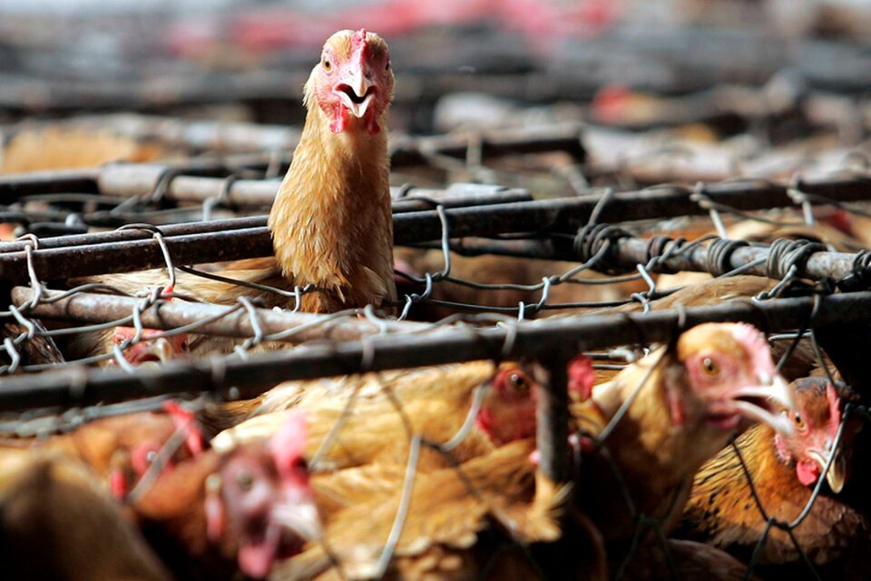

HOY
Temor a una epidemia de gripe aviar: sacrifican 18 millones de aves de corral
Más de 18 millones de aves de corral fueron sacrificadas en Italia para detener una epidemia de gripe aviar. Hasta la fecha, se identificaron 308 brotes, la mayoría en las zonas de Lombardía y Véneto. Ante ese escenario, la Confederación de Agricultores de Italia (Confagricoltura) solicitó ayuda a los bancos para apoyar a los criadores de aves de corral que han tenido que sacrificar, desde octubre, a sus pavos y gallinas ponedoras. Durante 2021, la avicultura italiana, que cuenta con 18.000 granjas, 6.000 profesionales en el área y otros 38.000 empleados, facturó 4.100 millones de euros. Las granjas italianas, aseguró el Instituto de Zooprofilaxis Experimental de Véneto, son actualmente "las más afectadas" de Europa por la "epizootia" (enfermedad que reina transitoriamente en una región o localidad y ataca simultáneamente a una gran cantidad de individuos de una o varias especies de animales). En tanto, Francia reportó 167 brotes, Hungría 111, Polonia 77 y Alemania 51. En lo que va del año, Italia identificó una docena de nuevo brotes, mientras que el total ya asciende a 308, lo que supone un "daño económico significativo". "La situación económica y financiera de muchas granjas es insostenible", lamentó en ese sentido Massimiliano Giansanti, líder de Confagricoltura, al señalar que el sector atraviesa un período "extremadamente crítico". El gobierno italiano, en tanto, prometió fondos europeos para "indemnizar a los criadores perjudicados por las restricciones a la circulación de animales y huevos" que frenaron la producción e interrumpieron las exportaciones.
Coronavirus: se registraron 78.121 nuevos contagios y 281 muertos
Mientras el Gobierno apuesta a una nueva campaña de vacunación para garantizar el inicio del ciclo lectivo 2022 con "presencialidad plena y segura", tal como adelantó el Presidente al mediodía, el Ministerio de Salud informó que el porcentaje de ocupación de camas en Unidades de Terapia Intensiva (UTI) es del 47,9% a nivel nacional y del 46,9% en el Área Metropolitana de Buenos Aires (AMBA).

Además, se notificaron 281 muertes (147 mujeres, 133 hombres y una persona sin sexo registrado), que suman 119.444 personas fallecidas desde marzo del año pasado hasta la fecha a causa de la COVID-19. Durante la jornada se realizaron 116.841 testeos, se informó oficialmente. La provincia de Buenos Aires, con 34.719 casos; la Ciudad de Buenos Aires, con 10.378; Córdoba con 8301, y Santa Fe, con 4231, fueron las jurisdicciones que acumularon más contagios en las últimas 24 horas.